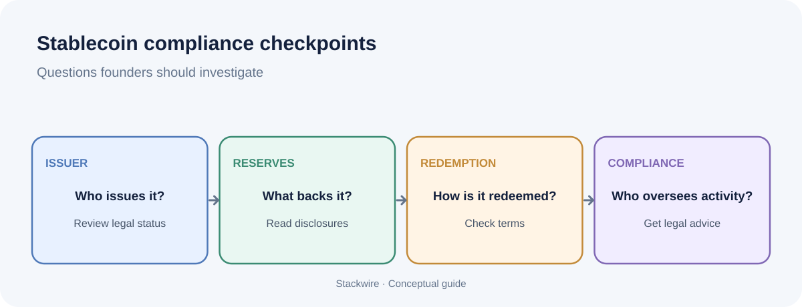

Crypto and web3
US stablecoin rules: what founders need to know in 2026
The first US federal stablecoin law is moving from paper to practice. If you build, accept or hold stablecoins, here is where things stand and what to check now.

The US GENIUS Act created a federal framework for payment stablecoin issuers. Founders should check an issuer's regulatory status, reserve disclosures, redemption terms and compliance obligations before relying on a stablecoin. This is general information, not legal advice.
Where the rules stand
The GENIUS Act became law in July 2025. It created a federal licensing framework for payment stablecoin issuers, with reserve, audit and anti-money-laundering requirements. The OCC issued its final rule on October 21, 2026 for payment stablecoin issuers and related activities within its jurisdiction. That rule is scheduled to take effect on January 18, 2027. It covers reserve assets, redemption, risk management, audits, reporting, supervision and custody. It does not complete every part of the federal implementation: the OCC says Bank Secrecy Act, anti-money-laundering and sanctions requirements are being handled in separate rulemaking with Treasury. The GENIUS Act was enacted on July 18, 2025, and the OCC describes January 18, 2027 as the effective date for the Act and its final rule.
Implementation timeline: what is final and what is still pending?
| Date | Development | What it means |
|---|---|---|
| 18 July 2025 | GENIUS Act enacted | Federal statutory framework for payment stablecoins was established. |
| 21 October 2026 | OCC issued its final rule | Final OCC rules address issuers and activities within OCC jurisdiction, plus certain custody activities. |
| 18 January 2027 | Act and OCC final rule effective | Key statutory and OCC implementation requirements take effect on this date. |
| As of 10 November 2026 | OCC applications not yet open | The OCC says it will announce when it can accept applications and waiver requests after required information-collection approval. |
The OCC rule is not a single nationwide answer for every stablecoin company. The regulator depends on the issuer's legal status and the activity involved. The OCC also says separate rulemaking will address Bank Secrecy Act, anti-money-laundering and sanctions provisions within its implementation work.
What issuers must do
- Maintain eligible reserve assets that meet the GENIUS Act and applicable regulator rules. Do not assume a token is compliant simply because its issuer publishes a reserve statement.
- Honor redemptions at par.
- Meet applicable audit, reporting and supervisory requirements. AML and sanctions implementation details are being handled through separate rulemaking and other applicable obligations.
- An issuer may not pay interest or yield solely for holding a payment stablecoin. This is not the same as saying every third-party rewards arrangement is automatically permitted; the legal and economic structure matters and requires specialist review.
Why it matters even if you never issue a coin
Using a stablecoin in the US will increasingly depend on the regulatory status of the company behind it. Exchanges, wallets and payment firms that support a token take on risk if its issuer is unlicensed or cannot show its reserves.
A five-point check for founders
- Confirm the issuer’s license status or the pathway it is using.
- Read the latest reserve attestation and the redemption terms.
- Check how the token fits your AML and KYC flows.
- Get legal review before advertising any yield or rewards on stablecoin balances.
- Plan for other markets: the UK expects FCA authorization for issuers whose tokens circulate there, and the EU already enforces MiCA licensing.
What the OCC's October 2026 final rule covers
The OCC's October 21 bulletin says its final rule implements the GENIUS Act for entities under OCC jurisdiction. The rule covers permitted payment stablecoin issuers and foreign payment stablecoin issuers within that scope, as well as certain custody activities by OCC-supervised entities. It sets standards for reserve assets, redemption, risk management, audits, reports, supervision, applications and registrations.
Do not read an OCC rule as a complete answer for every stablecoin business. Different issuers may fall under different primary federal or state regulators, and separate Treasury and agency work remains relevant. A wallet, exchange, payment company or software provider may have a different regulatory role from the issuer itself.
Are stablecoin issuer applications open yet?
As of November 10, 2026, the OCC's GENIUS Act landing page says it is not yet accepting applications or waiver requests. It says applications will begin after the Office of Management and Budget gives final approval to the information collection for application forms, and the OCC will announce when the process opens. This is a time-sensitive status and should be rechecked before relying on it.
What founders should distinguish
- Issuer: the entity that creates and redeems the payment stablecoin and is subject to issuer requirements.
- Custodian: the entity that safeguards reserve assets or customer stablecoins, depending on the service and legal arrangement.
- Exchange or wallet: a service that may distribute, hold or facilitate transfers of a token without being its issuer.
- Merchant or SaaS business: a company that accepts stablecoins as payment and must assess payment, custody, sanctions and jurisdictional questions relevant to its own activities.
These labels are not legal conclusions. A company's actual activities, control over customer assets, location and contractual structure determine which rules may apply.
A practical due-diligence checklist
- Identify the legal entity that issues the token. Do not rely only on the brand name or ticker.
- Check whether the issuer is permitted under the relevant US framework, or whether an applicable transition or waiver process is in place.
- Read reserve disclosures and independent attestations. Check what assets back the token, where they are held and how frequently information is published.
- Read redemption terms, including who can redeem, minimum amounts, fees, timing and circumstances where redemption can be delayed.
- Map the service providers in the flow: issuer, custodian, exchange, wallet, payment processor and banking partners.
- Document sanctions screening, transaction monitoring, suspicious activity escalation and recordkeeping responsibilities with qualified counsel.
- Check the rules in every country where customers, counterparties or operations are located. A US framework does not replace local licensing requirements elsewhere.
What the law does not tell a founder automatically
The existence of a federal framework does not mean every token described as a stablecoin is approved, every issuer is licensed, or every platform offering a token has the same regulatory status. It also does not remove operational risks such as smart-contract vulnerabilities, depegging, custody failures, banking interruptions or redemption bottlenecks.
For product teams, the right question is not simply “Is this a stablecoin?” It is “Who issues it, what rights does the holder have, how can it be redeemed, who controls the keys and reserves, and which rules apply to each party in our flow?”
Frequently asked questions
What is the GENIUS Act?
The GENIUS Act is a US federal law enacted on July 18, 2025 that creates a framework for payment stablecoin issuers. It establishes requirements around permitted issuers, reserves, redemption and supervision, with implementation by federal and state regulators.
When does the OCC's GENIUS Act final rule take effect?
The OCC's October 21, 2026 final rule states an effective date of January 18, 2027. The scope is limited to issuers and activities under OCC jurisdiction; other agencies have separate implementation responsibilities.
Can a company issue a payment stablecoin in the United States today?
The GENIUS Act generally requires a person issuing a payment stablecoin in the United States to be a permitted payment stablecoin issuer, subject to the Act's terms and transition provisions. Businesses should obtain current legal advice rather than infer permission from a token's market availability.
Does the GENIUS Act make stablecoins risk-free?
No. Regulation can set issuer and reserve standards, but it does not remove market, operational, cyber, custody, liquidity or counterparty risks. Review the token's issuer, reserve information and redemption rights.
This is general educational information, not legal or financial advice. Rules and application status can change; consult qualified counsel and the relevant regulator before acting.
Have expertise to share? Write for Stackwire and publish your own article.